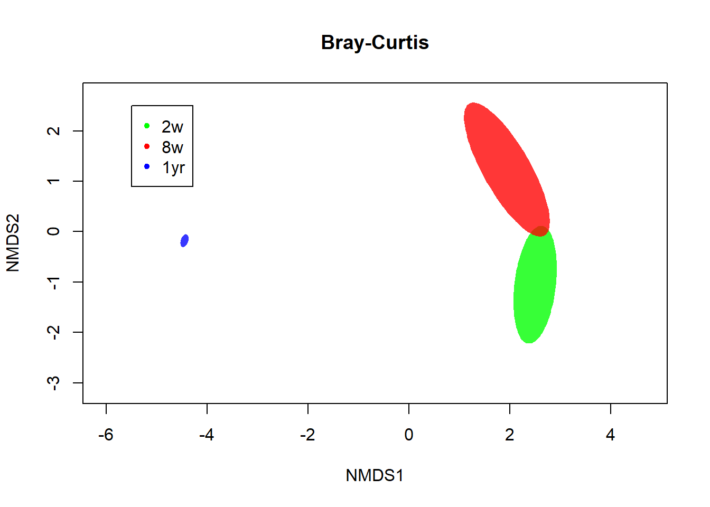
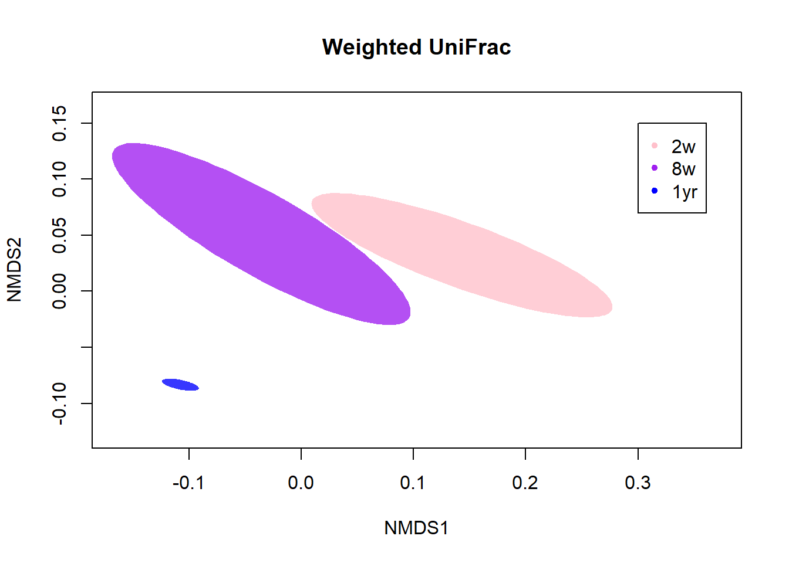
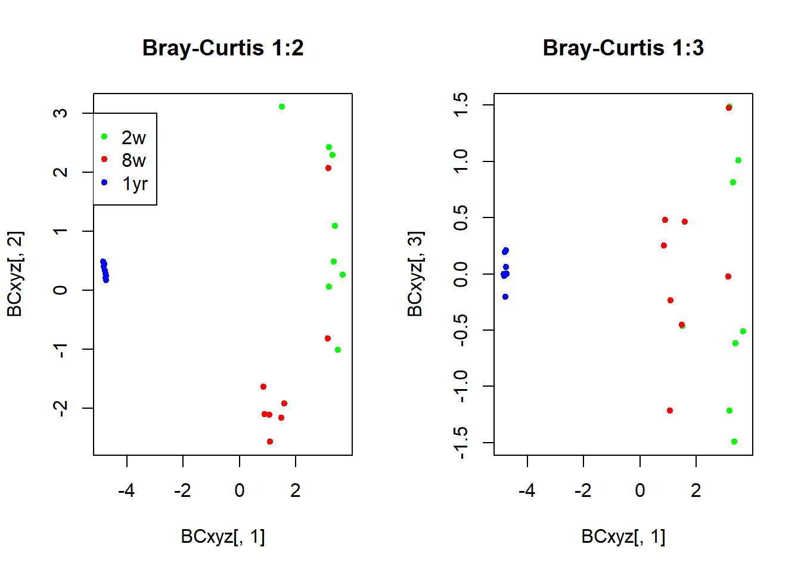
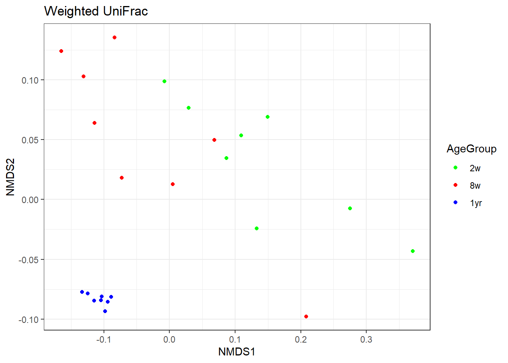
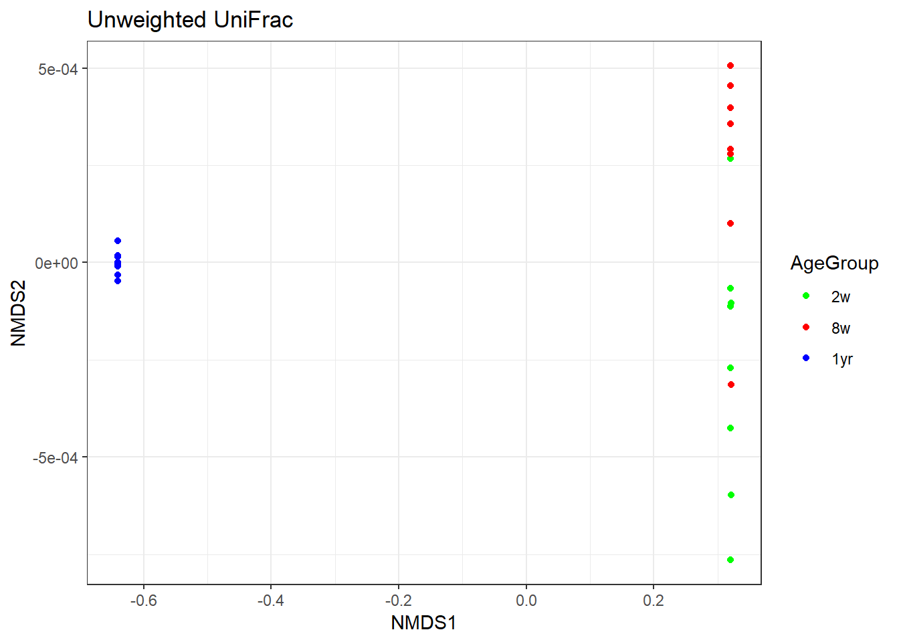
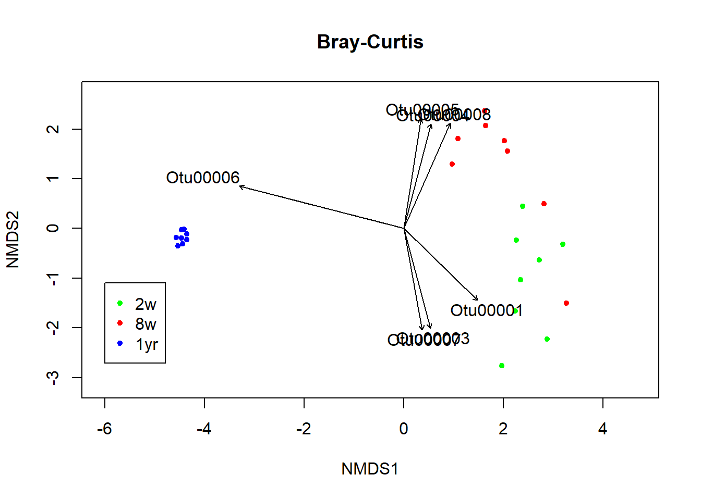
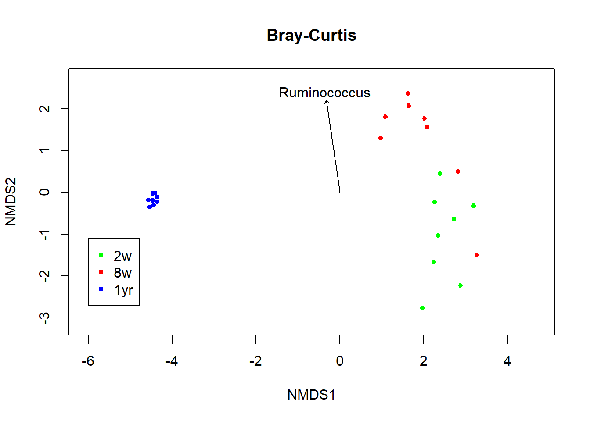
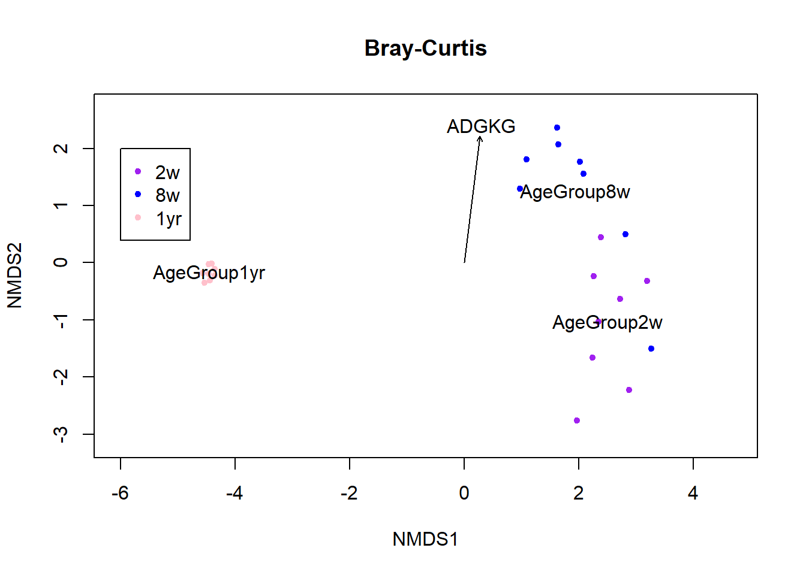
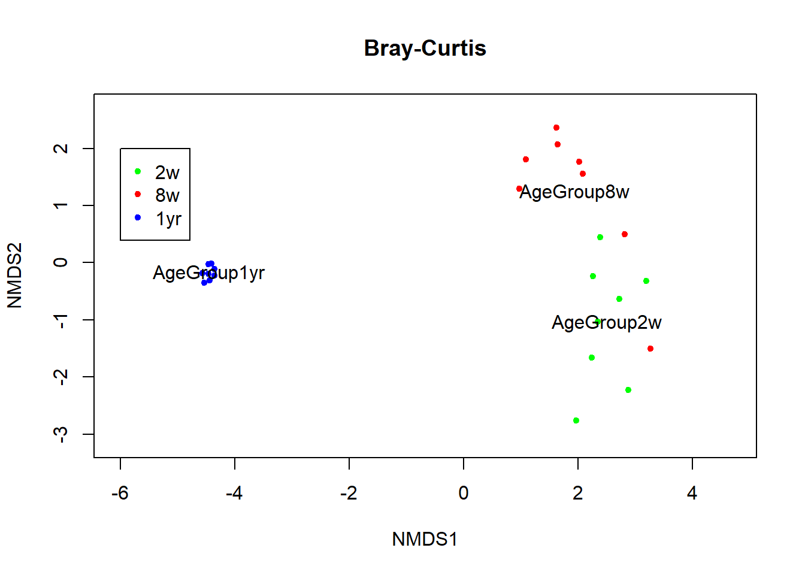
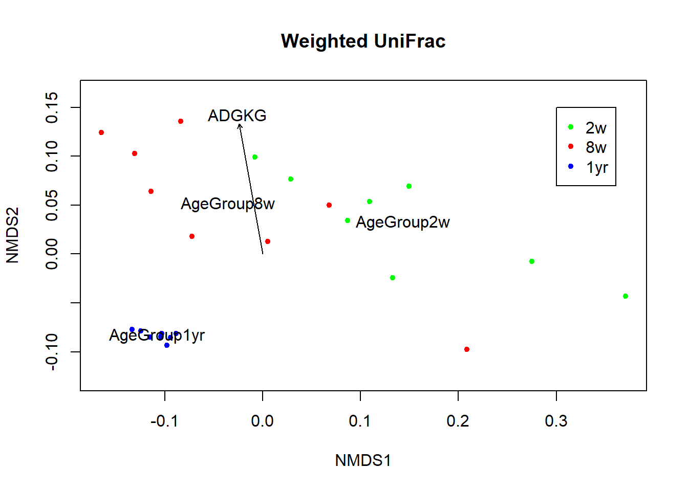

6 Free space
This was the fifth assignment for our portfolio. We had/have to fill 32 hours learning something new that will be useful for our internship next year and possibly our job.
- Uitzoeken welke automatiseringen er op microbiologische labs worden gebruikt.
- Metagenomics? https://bmcbioinformatics.biomedcentral.com/articles/10.1186/s12859-020-03933-4 (megaR package) http://web.evolbio.mpg.de/~wang/Site/R_tutorial_files/16S%20Metagenomic%20Analysis%20Tutorial.pdf (random tutorial) https://www.mcs.anl.gov/~braithwaite/matR/docs-and-pubs/matR-user-manual.pdf (matR package) https://rpubs.com/jrandall7/EICC16s (phyloseq) https://cran.r-project.org/web/packages/microbial/microbial.pdf (microbial package) https://bioconductor.org/help/course-materials/2017/BioC2017/Day1/Workshops/Microbiome/MicrobiomeWorkflowII.html (aritkel over microbioom analyse workflow)
https://www.nicholas-ollberding.com/post/introduction-to-the-statistical-analysis-of-microbiome-data-in-r/ (soort course over de analyse van microbioom data) https://rstudio-pubs-static.s3.amazonaws.com/268156_d3ea37937f4f4469839ab6fa2c483842.html (ook een course over de analyse van microbiota data) https://grunwaldlab.github.io/analysis_of_microbiome_community_data_in_r/04--manipulating.html (nog een course) - Python?
6.1 Course: Introduction to the statistical analysis of microbiome data in R
Link to the course: https://www.nicholas-ollberding.com/post/introduction-to-the-statistical-analysis-of-microbiome-data-in-r/
In this course, we examined the differences in microbiota between patients with and without chronic fatigue syndrome.
The aspects that were looked at were:
Taxonomic relative abundance
Hierarchal clustering
Alpha-diversity (microbiome diversity in just one sample)
Beta-divesity (microbiome diversity in two or more samples)
Diffrential abundance testing
Predicting class labels
.cran_packages <- c("tidyverse", "cowplot", "picante", "vegan", "HMP", "dendextend", "rms", "devtools")
.bioc_packages <- c("phyloseq", "DESeq2", "microbiome", "metagenomeSeq", "ALDEx2")
.inst <- .cran_packages %in% installed.packages()
if(any(!.inst)) {
install.packages(.cran_packages[!.inst])
}
if (!requireNamespace("BiocManager", quietly = TRUE))
install.packages("BiocManager")
BiocManager::install(.bioc_packages, version = "3.15") #Changed 3.9 to 3.15
devtools::install_github("adw96/breakaway")
devtools::install_github(repo = "malucalle/selbal") #changed UVic-omics to malucallelibrary(tidyverse)
library(phyloseq)
library(DESeq2)
library(microbiome)
library(vegan)
library(picante)
library(ALDEx2)
library(metagenomeSeq)
library(HMP)
library(dendextend)
library(selbal)
library(rms)
library(breakaway)# Reading in the data
ps <- readRDS("Data/Data_raw/ps_giloteaux_2016.rds")
# Sorting the samples on total read count
sort(phyloseq::sample_sums(ps))
# Removing (samples with?) less than 5000 reads
(ps <- phyloseq::subset_samples(ps, phyloseq::sample_sums(ps) > 5000))
# Removing the OTU's that were only present in the removed samples
(ps <- phyloseq::prune_taxa(phyloseq::taxa_sums(ps) > 0, ps))
# Assigning a new metadata field
phyloseq::sample_data(ps)$Status <- ifelse(phyloseq::sample_data(ps)$Subject == "Patient", "Chronic Fatique", "Control")
phyloseq::sample_data(ps)$Status <- factor(phyloseq::sample_data(ps)$Status, levels = c("Control", "Chronic Fatique"))
ps %>% sample_data %>% dplyr::count(Status)# Counting all the phyla in the dataset
table(phyloseq::tax_table(ps)[, "Phylum"])
# Convert the samples to relative abundances
ps_rel_abund = phyloseq::transform_sample_counts(ps, function(x){x / sum(x)})
phyloseq::otu_table(ps)[1:5, 1:5] # Before we converted it to relative abundances
phyloseq::otu_table(ps_rel_abund)[1:5, 1:5] # After we calculated the relative abundances
# Plotting the relative abundances, devided by the two groups
phyloseq::plot_bar(ps_rel_abund, fill = "Phylum")+
geom_bar(aes(color = Phylum, fill = Phylum), stat = "identity", position = "stack")+
labs(x = "", y = "Relative Abundance\n")+
facet_wrap(~ Status, scales = "free")+
theme(panel.background = element_blank(),
axis.text.x = element_blank(),
axis.ticks.x = element_blank())# Sorting the taxa by their relative abundance
sort(ps_rel_abund@tax_table[["Phylum"]], decreasing = TRUE) %>% phyloseq::plot_bar(fill = "Phylum")+
geom_bar(aes(color = Phylum, fill = Phylum), stat = "identity", position = "stack")+
labs(x = "", y = "Relative Abundance\n")+
facet_wrap(~ Status, scales = "free")+
theme(panel.background = element_blank(),
axis.text.x = element_blank(),
axis.ticks.x = element_blank())# Grouping the taxa according to phylum and renaming the groups
ps_phylum <- phyloseq::tax_glom(ps, "Phylum")
phyloseq::taxa_names(ps_phylum) <- phyloseq::tax_table(ps_phylum)[, "Phylum"]
phyloseq::otu_table(ps_phylum)[1:5, 1:5]
# Melting the data and making the boxplots
phyloseq::psmelt(ps_phylum) %>%
ggplot(data = ., aes(x = Status, y = Abundance))+
geom_boxplot(outlier.shape = NA)+
geom_jitter(aes(colour = OTU), height = 0, width = 0.2)+
labs(x = "", y = "Abundance\n")+
facet_wrap(~ OTU, scales = "free")# Making two subsets
controls <- phyloseq::subset_samples(ps_phylum, Status == "Control")
cf <- phyloseq::subset_samples(ps_phylum, Status = "Chronic Fatigue")
# Looking at the OTU tables
control_otu <- data.frame(phyloseq::otu_table(controls))
cf_otu <- data.frame(phyloseq::otu_table(cf))
# Grouping the rare phyla to improve testing
control_otu <- control_otu %>% t(.) %>% as.data.frame(.) %>% mutate(Other = Cyanobacteria + Euryarchaeota + Tenericutes + Verrucomicrobia + Fusobacteria) %>% dplyr::select(-Cyanobacteria, -Euryarchaeota, -Tenericutes, -Verrucomicrobia, -Fusobacteria)
cf_otu <- cf_otu %>% t(.) %>% as.data.frame(.) %>% mutate(Other = Cyanobacteria + Euryarchaeota + Tenericutes + Verrucomicrobia + Fusobacteria) %>% dplyr::select(-Cyanobacteria, -Euryarchaeota, -Tenericutes, -Verrucomicrobia, -Fusobacteria)
# Performing the HMP test
group_data <- list(control_otu, cf_otu)
(xdc <- HMP::Xdc.sevsample(group_data))
1 - pchisq(0.2769004, 5) # Looking at the Chi-Squared distributionSince the P-value of the HMP test is nearly 1, we cannot reject the null hypothesis that there is no statistical significant distribution of phyla between the two groups.
Looking at the hierarchical clustering in the samples
# Extracting the OTU table
ps_rel_otu <- data.frame(phyloseq::otu_table(ps_rel_abund))
ps_rel_otu <- t(ps_rel_otu)
# Computing the Bray-Curtis dissimilarity
bc_dist <- vegan::vegdist(ps_rel_otu, method = "bray")
# Generating a matrix with the dissimilarities
as.matrix(bc_dist)[1:5, 1:5]
# Saving it as a dendrogram
ward <- as.dendrogram(hclust(bc_dist, method = "ward.D2"))
# Adding color coding
meta <- data.frame(phyloseq::sample_data(ps_rel_abund))
colorCode <- c(Control = "red", `Chronic Fatigue` = "blue")
labels_colors(ward) <- colorCode[meta$Status][order.dendrogram(ward)]
# Plotting the dendrogram
plot(ward)plot_heatmap(cf)
plot_heatmap(controls)Looking at the alpha diversity
Alpha diversity looks at the diversity within a sample and how the observed OTU’s are distributed.
# Plotting the observed richness
ggplot(data = data.frame("total_reads" = phyloseq::sample_sums(ps),
"observed" = phyloseq::estimate_richness(ps, measures = "Observed")[, 1]),
aes(x = total_reads, y = observed)) +
geom_point() +
geom_smooth(method="lm", se = FALSE) +
labs(x = "\nTotal Reads", y = "Observed richness\n")Now we’re going to subsample the reads, plot them and test for group differences
# Subsample reads
(ps_rare <- phyloseq::rarefy_even_depth(ps, rngseed = 123, replace = FALSE))
head(phyloseq::sample_sums(ps_rare))
# Making a dataframe with the adiv measures, another package to analyse and measure biodiversity
adiv <- data.frame("Observed" = phyloseq::estimate_richness(ps_rare, measures = "Observed"),
"Shannon" = phyloseq::estimate_richness(ps_rare, measures = "Shannon"),
"PD" = picante::pd(samp = data.frame(t(data.frame(phyloseq::otu_table(ps_rare)))), include.root = FALSE, tree=phyloseq::phy_tree(ps_rare))[, 1],
"Status" = phyloseq::sample_data(ps_rare)$Status) # Zelf "include.root = FALSE" toegevoegd, anders kreeg ik steeds een error
head(adiv)
# Plotting the adiv measures
adiv %>% gather(key = metric, value = value, c("Observed", "Shannon", "PD")) %>%
mutate(metric = factor(metric, levels = c("Observed", "Shannon", "PD"))) %>%
ggplot(aes(x = Status, y = value)) +
geom_boxplot(outlier.color = NA) +
geom_jitter(aes(color = Status), height = 0, width = 0.2) +
labs(x = "", y = "") +
facet_wrap(~metric, scales = "free") +
theme(legend.position = "none")
# Summarising the data
adiv %>% group_by(Status) %>%
dplyr::summarise(median_observed = median(Observed),
median_shannon = median(Shannon),
median_pd = median(PD))
# Performing the Wilcoxon tests for the three estimates
wilcox.test(Observed ~ Status, data = adiv, exact = FALSE, conf.int = TRUE)
wilcox.test(Shannon ~ Status, data = adiv, conf.int = TRUE)
wilcox.test(PD ~ Status, data = adiv, conf.int = TRUE)Looking at the beta diversity
Beta diversity looks at the diversity between samples and how it’s similar or dissimilar.
# Transforming the Total Read Counts according to the Centered Log Ratio method
(ps_clr <- microbiome::transform(ps, "clr"))
phyloseq::otu_table(ps)[1:5, 1:5] # Old OTU table
phyloseq::otu_table(ps_clr)[1:5, 1:5] # New OTU table
# The value are now the dominance for each taxa relative to the geometric mean of all taxa on the logarithmic scale
6.2 Course: Microbiota analysis in R
Link to the course: https://rstudio-pubs-static.s3.amazonaws.com/268156_d3ea37937f4f4469839ab6fa2c483842.html
In this course, we will be looking at the fecal bacterial microbiota of 8 calves at ages 2 weeks, 8 weeks and 1 year old and correlating them with variables such as weight gain, expressed as Average Daily Gain in Kilograms(ADGKG), and gastrointestinal short chain fatty acids, SCFA.
# install.packages("ape")
library(ape)
library(tidyverse)
library(dplyr)
library(ggplot2)
library(gplots)
library(lme4)
library(phangorn)
library(plotly)
library(tidyr)
library(here)
library(vegan)
# install.packages("VennDiagram")
library(VennDiagram)
# Installed Java from: https://www.java.com/en/download/manual.jsp
# Installed Java JDk from: https://www.oracle.com/java/technologies/downloads/#jdk18-windows
# install.packages("rJava")
library(rJava)
# install.packages("venneuler")
# library(venneuler) # R kapt er steeds mee als ik deze wil laden
# if (!require("BiocManager", quietly = TRUE))
# install.packages("BiocManager")
# BiocManager::install(version = "3.15") # Instead of source("https://bioconductor.org/biocLite.R")
# BiocManager::install("phyloseq") # Instead of biocLite("phyloseq") ?
library(phyloseq)# Downloaded the data from: https://github.com/kdillmcfarland/workshops_UW_Madison/tree/master/Microbiota_analysis_R/Data
OTU = read.table("Data/example.final.an.unique_list.0.03.norm.shared.txt", header = TRUE, sep = "\t")
tax = read.table("Data/example.final.an.unique_list.0.03.cons.taxonomy.txt", header = TRUE, sep = "\t")
meta = read.table("Data/example.metadata.txt", header = TRUE, row.names = 1, sep = "\t")
SCFA = read.table("Data/example.SCFA.txt", header = TRUE, row.names = 1, sep = "\t")# Setting the "Group" column as row names in the OTU dataset
row.names(OTU) = OTU$Group
# Removing the columns that are not OTU counts
OTU.clean = OTU[,-which(names(OTU) %in% c("label", "numOtus", "Group"))]
# Setting the "OTU" column as row names in the taxonomy table
row.names(tax) = tax$OTU
# Removing the OTU's that aren't present in the OTU.clean dataset
tax.clean = tax[row.names(tax) %in% colnames(OTU.clean),]
# Separating the taxonomy table so each level has its own column
tax.clean = separate(tax.clean, Taxonomy, into = c("Domain", "Phylum", "Class", "Order", "Family", "Genus", "Species", "Strain"), sep = ";")
# Removing the "Size", "Strain" and "OTU" columns because these are now row names
tax.clean = tax.clean[,-which(names(tax.clean) %in% c("Size", "Strain", "OTU"))]
# Making sure the three datasets have samples in the same order
OTU.clean = OTU.clean[order(row.names(OTU.clean)),]
meta = meta[order(row.names(meta)),]
SCFA = SCFA[order(row.names(SCFA)),]
# set.seed to make the analysis reproducible
set.seed(8765)Looking at the alpha diversity
Alpha diversity is the diversity within a sample. It looks at richness, which is the amount of OTU’s in each sample, and at evenness, which is how evenly the different OTU’s are distributed within the sample.
# Creating a 2x2 plot environment so we can see all 4 metrics at once
par(mfrow = c(2,2))
# Plotting the four metrics
hist(meta$shannon, main = "Shannon diversity", xlab = "", breaks = 10)
hist(meta$simpson, main = "Simpson diversity", xlab = "", breaks = 10)
hist(meta$chao, main = "Chao richness", xlab = "", breaks = 15)
hist(meta$ace, main = "ACE richness", xlab = "", breaks = 15)
None of the data are normally distributed. Simpson diversity is very often skewed as seen in this histogram, so we’ll calculate 1/Simpson and plot the metrics again.
# Creating a 2x2 environment
par(mfrow = c(2,2))
# Plotting the four metrics again
hist(meta$shannon, main = "Shannon diversity", xlab = "", breaks = 10)
hist(1/meta$simpson, main = "Inverse Simpson diversity", xlab = "", breaks = 10)
hist(meta$chao, main = "Chao richness", xlab = "", breaks = 15)
hist(meta$ace, main = "ACE richness", xlab = "", breaks = 15)
Now the Simpson diversity is distributed similarly to the other richness metrics.
Next, we’ll test the four metrics for normal distribution.
shapiro.test(meta$shannon)##
## Shapiro-Wilk normality test
##
## data: meta$shannon
## W = 0.91511, p-value = 0.0456shapiro.test(1/meta$simpson)##
## Shapiro-Wilk normality test
##
## data: 1/meta$simpson
## W = 0.74821, p-value = 4.69e-05shapiro.test(meta$chao)##
## Shapiro-Wilk normality test
##
## data: meta$chao
## W = 0.80636, p-value = 0.0003749shapiro.test(meta$ace)##
## Shapiro-Wilk normality test
##
## data: meta$ace
## W = 0.83017, p-value = 0.0009573
None of the richness metrics are normally distributed, which was to be expected from the graphs we’ve seen. So we cannot run any tests that assume the data is normally distributed.
For illustration purposes, we’ll run the ANOVA test with the Shannon’s diversity because that’s the closest to normally distributed. We’ll look at if age impacts the Shannon diversity of the fecal microbiota.
aov.shannon.age = aov(shannon ~ AgeGroup, data = meta)
summary(aov.shannon.age)## Df Sum Sq Mean Sq F value Pr(>F)
## AgeGroup 2 42.98 21.489 103.4 1.35e-11 ***
## Residuals 21 4.36 0.208
## ---
## Signif. codes: 0 '***' 0.001 '**' 0.01 '*' 0.05 '.' 0.1 ' ' 1
We’ll run Tukey’s honest significance test to do pairwise comparisons between groups and correct for multiple comparisons.
TukeyHSD(aov.shannon.age)## Tukey multiple comparisons of means
## 95% family-wise confidence level
##
## Fit: aov(formula = shannon ~ AgeGroup, data = meta)
##
## $AgeGroup
## diff lwr upr p adj
## 2w-1yr -3.270063 -3.8446230 -2.695503 0.0e+00
## 8w-1yr -1.830903 -2.4054628 -1.256342 2.0e-07
## 8w-2w 1.439160 0.8646001 2.013720 8.5e-06
It’s clear that all age groups have significantly different diversity. In a plot, we can clearly see that diversity increases with ages.
# Re-ordering the groups
meta$AgeGroup.ord = factor(meta$AgeGroup, c("2w", "8w", "1yr"))
# Returning the plot area to 1x1
par(mfrow = c(1,1))
# Plotting the diversity
boxplot(shannon ~ AgeGroup.ord, data = meta,
ylab = "Shannon's diversity",
xlab = "Age group") # Added the xlab myself because it looks better :)
To illustrate some non-parametric tests, we’ll use Chao’s richness estimate. Age is categorical, so we’ll use Kruskal-Wallis.
kruskal.test(chao ~ AgeGroup, data = meta)##
## Kruskal-Wallis rank sum test
##
## data: chao by AgeGroup
## Kruskal-Wallis chi-squared = 19.28, df = 2, p-value = 6.507e-05
We can also test pairwise within age groups with Wilcoxon Rank Sum Tests.
pairwise.wilcox.test(meta$chao, meta$AgeGroup, p.adjust.method = "fdr")##
## Pairwise comparisons using Wilcoxon rank sum exact test
##
## data: meta$chao and meta$AgeGroup
##
## 1yr 2w
## 2w 0.00023 -
## 8w 0.00023 0.00186
##
## P value adjustment method: fdr
Just like the diversity, richness also increases with age.
# Creating a 1x1 plot environment
par(mfrow = c(1,1))
# Plotting the richness
boxplot(chao ~ AgeGroup.ord, data = meta,
ylab = "Chao richness",
xlab = "Age group") # Again, added the xlab myself for aesthetics :)
Average Daily Gain is a continuous variable, so we’ll use a linear model to visualise it.
We’ll use Shannon’s diversity again to run some tests that are meant for normally distributed data. We’ll take a look at if the ADG impacts the Shannon diversity of the fecal microbiota.
glm.shannon.ADG = glm(shannon ~ ADGKG, data = meta)
summary(glm.shannon.ADG)##
## Call:
## glm(formula = shannon ~ ADGKG, data = meta)
##
## Deviance Residuals:
## Min 1Q Median 3Q Max
## -2.49110 -1.11216 -0.01749 1.53658 1.84728
##
## Coefficients:
## Estimate Std. Error t value Pr(>|t|)
## (Intercept) 3.62565 1.01390 3.576 0.00169 **
## ADGKG -0.03407 0.97805 -0.035 0.97253
## ---
## Signif. codes: 0 '***' 0.001 '**' 0.01 '*' 0.05 '.' 0.1 ' ' 1
##
## (Dispersion parameter for gaussian family taken to be 2.151815)
##
## Null deviance: 47.343 on 23 degrees of freedom
## Residual deviance: 47.340 on 22 degrees of freedom
## AIC: 90.412
##
## Number of Fisher Scoring iterations: 2
This shows that the intercept of our model is signficantly different from 0, bu the slope is not, and the slope is our variable of interest.
Next, let’s plot the glm.
plot(shannon ~ ADGKG, data = meta)
abline(glm.shannon.ADG)
To illustrate non-normally distributed data, we’ll use Chao’s richness estimate again. We’ll first use the Gaussian distribution, but we already know this isn’t a good fit.
gaussian.chao.adg = glm(chao ~ADGKG, data = meta, family = "gaussian")
par(mfrow = c(1,2))
plot(gaussian.chao.adg, which = c(1,2))
Next, we’ll plot the quasipoisson distribuiton.
qp.chao.ADG = glm(chao ~ ADGKG, data = meta, family = "quasipoisson")
par(mfrow = c(1,2))
plot(qp.chao.ADG, which = c(1,2))
The quasipoisson distribution fits much better than the Gaussian distribution, so we’ll use quasipoisson for further calculations.
summary(qp.chao.ADG)##
## Call:
## glm(formula = chao ~ ADGKG, family = "quasipoisson", data = meta)
##
## Deviance Residuals:
## Min 1Q Median 3Q Max
## -24.36 -17.05 -10.66 18.81 26.91
##
## Coefficients:
## Estimate Std. Error t value Pr(>|t|)
## (Intercept) 6.4528 0.5561 11.605 7.54e-11 ***
## ADGKG -0.1859 0.5438 -0.342 0.736
## ---
## Signif. codes: 0 '***' 0.001 '**' 0.01 '*' 0.05 '.' 0.1 ' ' 1
##
## (Dispersion parameter for quasipoisson family taken to be 374.2485)
##
## Null deviance: 8117.2 on 23 degrees of freedom
## Residual deviance: 8074.4 on 22 degrees of freedom
## AIC: NA
##
## Number of Fisher Scoring iterations: 5
We’ll plot Chao and ADGKG again, to look at the correlation.
par(mfrow = c(1,1))
plot(log(chao) ~ ADGKG, data = meta, ylab = "ln(Chao's richness)")
abline(qp.chao.ADG)
Looking at the graph, there is nog significant correlation between Chao’s richness and the Average Daily Gain.
To test if age and ADG impacts diversity, we’ll conduct an ANOVA test.
aov.shannon.all = aov(shannon ~ AgeGroup*ADGKG, data = meta)
summary(aov.shannon.all)## Df Sum Sq Mean Sq F value Pr(>F)
## AgeGroup 2 42.98 21.489 95.472 2.61e-10 ***
## ADGKG 1 0.05 0.054 0.239 0.631
## AgeGroup:ADGKG 2 0.26 0.130 0.576 0.572
## Residuals 18 4.05 0.225
## ---
## Signif. codes: 0 '***' 0.001 '**' 0.01 '*' 0.05 '.' 0.1 ' ' 1
We can see that the interaction between age and ADG does not significantly impact Shannon’s diversity, so we’ll remove that variable and run the test again.
aov.shannon.all2 = aov(shannon ~ AgeGroup+ADGKG, data = meta)
summary(aov.shannon.all2)## Df Sum Sq Mean Sq F value Pr(>F)
## AgeGroup 2 42.98 21.489 99.70 3.96e-11 ***
## ADGKG 1 0.05 0.054 0.25 0.623
## Residuals 20 4.31 0.216
## ---
## Signif. codes: 0 '***' 0.001 '**' 0.01 '*' 0.05 '.' 0.1 ' ' 1
This test tells us that only age impacts Shannon’s diversity significantly, but we do not know which age groups differ significantly from eachother. To test this, we can run TukeyHSD with just age.
TukeyHSD(aov.shannon.all)## Tukey multiple comparisons of means
## 95% family-wise confidence level
##
## Fit: aov(formula = shannon ~ AgeGroup * ADGKG, data = meta)
##
## $AgeGroup
## diff lwr upr p adj
## 2w-1yr -3.270063 -3.875469 -2.664657 0.00e+00
## 8w-1yr -1.830903 -2.436309 -1.225496 1.20e-06
## 8w-2w 1.439160 0.833754 2.044567 2.81e-05
With this test, however, ADGKG is ignored because it’s continuous.
We’ll run the glm instead.
glm.shannon.all = glm(shannon ~ AgeGroup*ADGKG, data = meta)
summary(glm.shannon.all)##
## Call:
## glm(formula = shannon ~ AgeGroup * ADGKG, data = meta)
##
## Deviance Residuals:
## Min 1Q Median 3Q Max
## -1.0301 -0.2468 0.0894 0.1572 0.7624
##
## Coefficients:
## Estimate Std. Error t value Pr(>|t|)
## (Intercept) 5.7123 2.5928 2.203 0.0409 *
## AgeGroup2w -3.3969 2.6197 -1.297 0.2111
## AgeGroup8w -2.9610 2.7554 -1.075 0.2967
## ADGKG -0.4481 2.7599 -0.162 0.8728
## AgeGroup2w:ADGKG 0.1228 2.7848 0.044 0.9653
## AgeGroup8w:ADGKG 1.0750 2.8763 0.374 0.7130
## ---
## Signif. codes: 0 '***' 0.001 '**' 0.01 '*' 0.05 '.' 0.1 ' ' 1
##
## (Dispersion parameter for gaussian family taken to be 0.22508)
##
## Null deviance: 47.3425 on 23 degrees of freedom
## Residual deviance: 4.0514 on 18 degrees of freedom
## AIC: 39.413
##
## Number of Fisher Scoring iterations: 2
We can see that none of the interaction terms, which are AgeGroup2w:ADGKG and AgeGroup8w:ADGKG, are significant. So we’ll remove these, by changing AgeGroup*ADGKG to AgeGroup+ADGKG, and run the glm again.
glm.shannon.all2 = glm(shannon ~ AgeGroup+ADGKG, data = meta)
summary(glm.shannon.all2)##
## Call:
## glm(formula = shannon ~ AgeGroup + ADGKG, data = meta)
##
## Deviance Residuals:
## Min 1Q Median 3Q Max
## -0.95299 -0.25858 0.07643 0.30409 0.74487
##
## Coefficients:
## Estimate Std. Error t value Pr(>|t|)
## (Intercept) 5.4459 0.3487 15.619 1.14e-12 ***
## AgeGroup2w -3.2760 0.2324 -14.094 7.55e-12 ***
## AgeGroup8w -1.7989 0.2408 -7.471 3.30e-07 ***
## ADGKG -0.1639 0.3281 -0.500 0.623
## ---
## Signif. codes: 0 '***' 0.001 '**' 0.01 '*' 0.05 '.' 0.1 ' ' 1
##
## (Dispersion parameter for gaussian family taken to be 0.2155447)
##
## Null deviance: 47.3425 on 23 degrees of freedom
## Residual deviance: 4.3109 on 20 degrees of freedom
## AIC: 36.903
##
## Number of Fisher Scoring iterations: 2
Now that we’ve removed the interaction terms, the glm model shows age as significant.
This can also be done with non-normally distributed data, like Chao’s richness.
qp.chao.all = glm(chao ~ AgeGroup*ADGKG, data = meta, family = "quasipoisson")
summary(qp.chao.all)##
## Call:
## glm(formula = chao ~ AgeGroup * ADGKG, family = "quasipoisson",
## data = meta)
##
## Deviance Residuals:
## Min 1Q Median 3Q Max
## -7.774 -3.430 -0.140 3.692 5.277
##
## Coefficients:
## Estimate Std. Error t value Pr(>|t|)
## (Intercept) 6.99825 0.71122 9.840 1.14e-08 ***
## AgeGroup2w -1.61539 0.75272 -2.146 0.0458 *
## AgeGroup8w -2.24498 0.86846 -2.585 0.0187 *
## ADGKG 0.01751 0.75699 0.023 0.9818
## AgeGroup2w:ADGKG -0.42295 0.80094 -0.528 0.6039
## AgeGroup8w:ADGKG 0.86269 0.86550 0.997 0.3321
## ---
## Signif. codes: 0 '***' 0.001 '**' 0.01 '*' 0.05 '.' 0.1 ' ' 1
##
## (Dispersion parameter for quasipoisson family taken to be 18.86331)
##
## Null deviance: 8117.2 on 23 degrees of freedom
## Residual deviance: 348.5 on 18 degrees of freedom
## AIC: NA
##
## Number of Fisher Scoring iterations: 4
Just like the Shannon’s diversity, the interaction terms are not significant, so we’ll remove those and run the glm again.
qp.chao.all2 = glm(chao ~ AgeGroup+ADGKG, data = meta, family = "quasipoisson")
summary(qp.chao.all2)##
## Call:
## glm(formula = chao ~ AgeGroup + ADGKG, family = "quasipoisson",
## data = meta)
##
## Deviance Residuals:
## Min 1Q Median 3Q Max
## -7.783 -3.452 -1.378 3.744 8.184
##
## Coefficients:
## Estimate Std. Error t value Pr(>|t|)
## (Intercept) 7.03944 0.23567 29.870 < 2e-16 ***
## AgeGroup2w -1.98090 0.14862 -13.329 2.08e-11 ***
## AgeGroup8w -1.24286 0.11926 -10.422 1.57e-09 ***
## ADGKG -0.02643 0.24530 -0.108 0.915
## ---
## Signif. codes: 0 '***' 0.001 '**' 0.01 '*' 0.05 '.' 0.1 ' ' 1
##
## (Dispersion parameter for quasipoisson family taken to be 23.74583)
##
## Null deviance: 8117.20 on 23 degrees of freedom
## Residual deviance: 476.31 on 20 degrees of freedom
## AIC: NA
##
## Number of Fisher Scoring iterations: 4
As we can see, age is now significant for richness aswell.
We sampled the same animals over time, so this is a repeated measures design. We can add this component with (1|animal) in the lmer function.
rm.shannon.all = lmer(shannon ~ AgeGroup+ADGKG + (1|Animal), data = meta)
summary(rm.shannon.all)## Linear mixed model fit by REML ['lmerMod']
## Formula: shannon ~ AgeGroup + ADGKG + (1 | Animal)
## Data: meta
##
## REML criterion at convergence: 32.4
##
## Scaled residuals:
## Min 1Q Median 3Q Max
## -1.83117 -0.45932 0.09539 0.49972 1.53368
##
## Random effects:
## Groups Name Variance Std.Dev.
## Animal (Intercept) 0.03793 0.1948
## Residual 0.17819 0.4221
## Number of obs: 24, groups: Animal, 8
##
## Fixed effects:
## Estimate Std. Error t value
## (Intercept) 5.3906 0.3520 15.313
## AgeGroup2w -3.2739 0.2114 -15.486
## AgeGroup8w -1.8104 0.2208 -8.201
## ADGKG -0.1049 0.3321 -0.316
##
## Correlation of Fixed Effects:
## (Intr) AgGrp2 AgGrp8
## AgeGroup2w -0.350
## AgeGroup8w -0.027 0.461
## ADGKG -0.884 0.057 -0.293
Very little, 0.0379, of the variance is explained by the animal random effect. This means that we don’t have to include the repeated measures in our final model, but it did need to be checked!
In conclusion on the alpha diversity: The diversity and richness of the fecal microbiota increases as the dairy cows age. Animal growth, measured by ADG, does not correlate with the diversity or richness of the fecal community.
Looking at the beta diversity
Beta diversity looks at the dissimilarity between samples, instead of within a sample, like the alpha diversity.
First, we’ll calculate the non-metric multidimensional scaling using the Bray-Curtis metric. This metric takes into account the presence or absence of OTU’s and the abundance of the OTU’s that are present in the samples. So, this metric looks at richness and diversity.
BC.nmds = metaMDS(OTU.clean, distance = "bray", k=2, trymax = 1000)## Square root transformation
## Wisconsin double standardization
## Run 0 stress 0.06208119
## Run 1 stress 0.06210577
## ... Procrustes: rmse 0.00142196 max resid 0.005448642
## ... Similar to previous best
## Run 2 stress 0.06208123
## ... Procrustes: rmse 0.0002939818 max resid 0.0006667466
## ... Similar to previous best
## Run 3 stress 0.06208111
## ... New best solution
## ... Procrustes: rmse 0.000204731 max resid 0.000465473
## ... Similar to previous best
## Run 4 stress 0.0620811
## ... New best solution
## ... Procrustes: rmse 1.986518e-05 max resid 4.33287e-05
## ... Similar to previous best
## Run 5 stress 0.06208117
## ... Procrustes: rmse 5.794984e-05 max resid 0.0001305115
## ... Similar to previous best
## Run 6 stress 0.06208113
## ... Procrustes: rmse 3.672359e-05 max resid 8.23805e-05
## ... Similar to previous best
## Run 7 stress 0.06210572
## ... Procrustes: rmse 0.001378329 max resid 0.005368037
## ... Similar to previous best
## Run 8 stress 0.06210378
## ... Procrustes: rmse 0.001413908 max resid 0.005105586
## ... Similar to previous best
## Run 9 stress 0.06208125
## ... Procrustes: rmse 0.0001224896 max resid 0.0002747291
## ... Similar to previous best
## Run 10 stress 0.06208111
## ... Procrustes: rmse 1.212188e-05 max resid 2.522293e-05
## ... Similar to previous best
## Run 11 stress 0.06208121
## ... Procrustes: rmse 0.0002127404 max resid 0.0004849115
## ... Similar to previous best
## Run 12 stress 0.06210373
## ... Procrustes: rmse 0.001425856 max resid 0.005115974
## ... Similar to previous best
## Run 13 stress 0.3701749
## Run 14 stress 0.06210382
## ... Procrustes: rmse 0.001409512 max resid 0.005096637
## ... Similar to previous best
## Run 15 stress 0.06208124
## ... Procrustes: rmse 9.356523e-05 max resid 0.0002029152
## ... Similar to previous best
## Run 16 stress 0.06210382
## ... Procrustes: rmse 0.001453464 max resid 0.005117477
## ... Similar to previous best
## Run 17 stress 0.06210562
## ... Procrustes: rmse 0.001356805 max resid 0.005299213
## ... Similar to previous best
## Run 18 stress 0.06208121
## ... Procrustes: rmse 8.948438e-05 max resid 0.0001972643
## ... Similar to previous best
## Run 19 stress 0.06208123
## ... Procrustes: rmse 0.0001043305 max resid 0.0002338428
## ... Similar to previous best
## Run 20 stress 0.06210572
## ... Procrustes: rmse 0.00138274 max resid 0.005378219
## ... Similar to previous best
## *** Solution reached
We’ve reached a convergent solution at around 20 iterations, and the stress is very low, 0.06. That means that 2 axis are sufficient to plot our data.
We’ll plot our data with different colors for each age group.
par(mfrow = c(1,1))
# Creating a blank plot for the nmds
plot(BC.nmds, type = "n", main = "Bray-Curtis")
# Adding the points
points(BC.nmds, display = "sites", pch = 20, col=c("blue", "green", "red"))[meta$AgeGroup] # [Meta$AgeGroup] buiten haakjes gehaald## NULL# Adding a legend
legend(-5.5, 2.5, legend = c("2w", "8w", "1yr"), col=c("green", "red", "blue"), pch = 20)
We can also calculate the nMDS for the Jaccard metric. This metric only looks at the presence or absence of OTU’s, so it only looks at richness.
J.nmds = metaMDS(OTU.clean, distance = "jaccard", k=2, trymax = 1000)## Square root transformation
## Wisconsin double standardization
## Run 0 stress 0.06208109
## Run 1 stress 0.0620812
## ... Procrustes: rmse 0.000177083 max resid 0.0003999569
## ... Similar to previous best
## Run 2 stress 0.06210582
## ... Procrustes: rmse 0.001409216 max resid 0.005429768
## ... Similar to previous best
## Run 3 stress 0.06210567
## ... Procrustes: rmse 0.00137946 max resid 0.005369397
## ... Similar to previous best
## Run 4 stress 0.06208119
## ... Procrustes: rmse 0.0001744131 max resid 0.0003942546
## ... Similar to previous best
## Run 5 stress 0.06208115
## ... Procrustes: rmse 0.000130016 max resid 0.0002909929
## ... Similar to previous best
## Run 6 stress 0.06208112
## ... Procrustes: rmse 0.0001066234 max resid 0.0002384603
## ... Similar to previous best
## Run 7 stress 0.0620811
## ... Procrustes: rmse 9.468274e-05 max resid 0.0002141725
## ... Similar to previous best
## Run 8 stress 0.0621059
## ... Procrustes: rmse 0.001426217 max resid 0.005460826
## ... Similar to previous best
## Run 9 stress 0.06208124
## ... Procrustes: rmse 0.0002015441 max resid 0.0004545264
## ... Similar to previous best
## Run 10 stress 0.0620812
## ... Procrustes: rmse 0.0001797232 max resid 0.0004060386
## ... Similar to previous best
## Run 11 stress 0.06208109
## ... New best solution
## ... Procrustes: rmse 6.139566e-05 max resid 0.0001371443
## ... Similar to previous best
## Run 12 stress 0.0621038
## ... Procrustes: rmse 0.001406932 max resid 0.005095216
## ... Similar to previous best
## Run 13 stress 0.06208126
## ... Procrustes: rmse 0.0001414878 max resid 0.0003183287
## ... Similar to previous best
## Run 14 stress 0.06208108
## ... New best solution
## ... Procrustes: rmse 3.770942e-05 max resid 7.95009e-05
## ... Similar to previous best
## Run 15 stress 0.06210568
## ... Procrustes: rmse 0.001379045 max resid 0.005369661
## ... Similar to previous best
## Run 16 stress 0.06208111
## ... Procrustes: rmse 8.244032e-05 max resid 0.0001835168
## ... Similar to previous best
## Run 17 stress 0.06208123
## ... Procrustes: rmse 0.0001586643 max resid 0.0003545319
## ... Similar to previous best
## Run 18 stress 0.06208122
## ... Procrustes: rmse 0.0001644494 max resid 0.0003672165
## ... Similar to previous best
## Run 19 stress 0.06208112
## ... Procrustes: rmse 7.816312e-05 max resid 0.0001743423
## ... Similar to previous best
## Run 20 stress 0.0620811
## ... Procrustes: rmse 7.313823e-05 max resid 0.0001625506
## ... Similar to previous best
## *** Solution reached
With this metric, we’ve also reached a convergent solution after 20 iterations. The stress is also very low for this metric, 0.06. So, we’ll plot this metric with 2 axis aswell.
plot(J.nmds, type = "n", main = "Jaccard")
points(J.nmds, display = "sites", pch = 20, col=c("blue", "green", "red"))[meta$AgeGroup]## NULLlegend(-3, 1.5, legend=c("2w", "8w", "1yr"), col = c("green", "red", "blue"), pch = 20)
The values in the plot are somewhat different, but the distributions are very similar. That’s because Jaccard = 2xBray-Curtis/(1+Bray-Curtis).
We can also plot the standard error ellipses of the nMDS data. We’ll plot the 99% confidence interval of the Bray-Curtis metric.
plot(BC.nmds, type = "n", main = "Bray-Curtis")
legend(-5.5, 2.5, legend = c("2w", "8w", "1yr"), col = c("green", "red", "blue"), pch = 20)
# Ellipse for 2 weeks
ordiellipse(BC.nmds, groups = meta$AgeGroup, display = "sites", kind = "se", conf = 0.99, label = FALSE, col = "green", draw = "polygon", alpha = 200, show.groups = c("2w"), border = FALSE)
# Ellipse for 8 weeks
ordiellipse(BC.nmds, groups = meta$AgeGroup, display = "sites", kind = "se", conf = 0.99, label = FALSE, col = "red", draw = "polygon", alpha = 200, show.groups = c("8w"), border = FALSE)
# ELLipse for 1 year
ordiellipse(BC.nmds, groups = meta$AgeGroup, display = "sites", kind = "se", conf = 0.99, label = FALSE, col = "blue", draw = "polygon", alpha = 200, show.groups = c("1yr"), border = FALSE)
If the stress is high, over 0.3, it’s better to increase to 3 axes.
We’ll first calculate the Bray-Curtis nMDS for a 3-axis plot.
BC.nmds.3D = metaMDS(OTU.clean, distance = "bray", k=3, trymax=1000)## Square root transformation
## Wisconsin double standardization
## Run 0 stress 0.04686211
## Run 1 stress 0.04741561
## Run 2 stress 0.04673316
## ... New best solution
## ... Procrustes: rmse 0.01078619 max resid 0.03453509
## Run 3 stress 0.05061342
## Run 4 stress 0.04740116
## Run 5 stress 0.04984351
## Run 6 stress 0.04747471
## Run 7 stress 0.05226505
## Run 8 stress 0.0529536
## Run 9 stress 0.04741183
## Run 10 stress 0.04575764
## ... New best solution
## ... Procrustes: rmse 0.03871705 max resid 0.1297458
## Run 11 stress 0.05084344
## Run 12 stress 0.04719045
## Run 13 stress 0.04864532
## Run 14 stress 0.04750072
## Run 15 stress 0.04793837
## Run 16 stress 0.04579474
## ... Procrustes: rmse 0.004492898 max resid 0.01438546
## Run 17 stress 0.05069325
## Run 18 stress 0.04857979
## Run 19 stress 0.05058111
## Run 20 stress 0.04859455
## Run 21 stress 0.04996549
## Run 22 stress 0.04739851
## Run 23 stress 0.04747497
## Run 24 stress 0.04675354
## Run 25 stress 0.04747484
## Run 26 stress 0.04861683
## Run 27 stress 0.04575768
## ... Procrustes: rmse 0.0001087933 max resid 0.0001902161
## ... Similar to previous best
## *** Solution reached
We’ll extract the x, y and z for the nMDS, and then plot them.
BCxyz = scores(BC.nmds.3D, display = "sites")
BCxyz## NMDS1 NMDS2 NMDS3
## 5017.1yr.F -4.7877193 0.32878559 -0.204579523
## 5017.2w.F 3.1847627 0.05697846 1.484325743
## 5017.8w.F 1.0503489 -2.11932201 -1.217100783
## 5020.1yr.F -4.7466509 0.24479143 -0.001927473
## 5020.2w.F 3.4956397 -1.01621364 1.008439783
## 5020.8w.F 1.5785763 -1.92688899 0.465285369
## 5026.1yr.F -4.7617021 0.20961333 0.209854984
## 5026.2w.F 3.3964195 1.09611959 -0.615338225
## 5026.8w.F 3.1475032 2.07012741 1.477070476
## 5031.1yr.F -4.7920071 0.44153808 0.196685523
## 5031.2w.F 3.3507672 0.48092133 -1.491382237
## 5031.8w.F 0.8516766 -1.63544389 0.254264412
## 5037.1yr.F -4.8418075 0.48746059 -0.004313703
## 5037.2w.F 3.6570393 0.26299035 -0.511188778
## 5037.8w.F 3.1287853 -0.82431199 -0.025514353
## 5041.1yr.F -4.7617047 0.28520072 0.060756551
## 5041.2w.F 3.1646155 2.42901236 -1.216761595
## 5041.8w.F 1.0838533 -2.57296922 -0.236134615
## 5045.1yr.F -4.7419263 0.16694129 0.005568155
## 5045.2w.F 1.5045514 3.11037881 -0.462668248
## 5045.8w.F 1.4782189 -2.16474462 -0.450092185
## 5053.1yr.F -4.8160856 0.39888230 -0.016335985
## 5053.2w.F 3.2925437 2.29778435 0.813017161
## 5053.8w.F 0.8843018 -2.10763164 0.478069543plot_ly(x=BCxyz[,1], y=BCxyz[,2], z=BCxyz[,3], type = "scatter3d", mode = "markers", color = meta$AgeGroup, colors = c("blue", "green", "red"))
3D plots are difficult to interpret in articles, so many authors choose to create two 2D plots instead.
par(mfrow = c(1,2))
# Plotting axis 1 and 2, which are x and y
plot(BCxyz[,1], BCxyz[,2], main = "Bray-Curtis 1:2", pch = 20, col = c("blue", "green", "red"))[meta$AgeGroup]## NULLlegend(-5.4, 3, legend = c("2w", "8w", "1yr"), col = c("green", "red", "blue"), pch = 20)
# Plotting axis 1 and 3, which are x and z
plot(BCxyz[,1], BCxyz[,3], main = "Bray-Curtis 1:3", pch = 20, col = c("blue", "green", "red"))[meta$AgeGroup]
## NULL
The most common type of beta-diversity metric is UniFrac. This metric takes phylogenetic relationships into account, as opposed to Bray-Curtis and Jaccard. So, with UniFrac, samples with different OTU’s from the same genus will be more similar than samples with OTU’s from different genera. The drawback of UniFrac is that it’s sensitive to low abundance OTU’s.
To plot UniFrac, we first have to make a phyloseq object. That means we need OTU.clean, meta and tax.clean data. After we’ve created the three separate objects, we’ll merge them into one.
OTU.UF = otu_table(as.matrix(OTU.clean), taxa_are_rows = FALSE)
tax.UF = tax_table(as.matrix(tax.clean))
meta.UF = sample_data(meta)
# Merging them into an object of class phyloseq
physeq = phyloseq(OTU.UF, tax.UF, meta.UF)
To add the phylogenetic component to UniFrac, we need a rooted phylogenetic tree of the OTU’s. In this workshop, it had already been calculated and stored in the dataset ‘NJ.tree.Rdata’. So, we’ll load this data and add it to the physeq object. Then, we’ll look at the tree and its components.
load("Data/NJ.tree.Rdata") # Downloaded it from GitHub and stored it in the folder "Data"
physeq.tree = merge_phyloseq(physeq, NJ.tree)
physeq.tree## phyloseq-class experiment-level object
## otu_table() OTU Table: [ 5002 taxa and 24 samples ]
## sample_data() Sample Data: [ 24 samples by 9 sample variables ]
## tax_table() Taxonomy Table: [ 5002 taxa by 7 taxonomic ranks ]
## phy_tree() Phylogenetic Tree: [ 5002 tips and 5000 internal nodes ]
Next, we’ll calculate the weighted UniFrac and ordinate it into nMDS.
wUF.ordu = ordinate(physeq.tree, method = "NMDS", distance = "unifrac", weighted = TRUE)## Run 0 stress 0.08645307
## Run 1 stress 0.08645305
## ... New best solution
## ... Procrustes: rmse 1.95726e-05 max resid 5.360447e-05
## ... Similar to previous best
## Run 2 stress 0.1335688
## Run 3 stress 0.1462923
## Run 4 stress 0.08645302
## ... New best solution
## ... Procrustes: rmse 0.0003084251 max resid 0.0008232998
## ... Similar to previous best
## Run 5 stress 0.08645296
## ... New best solution
## ... Procrustes: rmse 0.0002326256 max resid 0.0006198192
## ... Similar to previous best
## Run 6 stress 0.1157451
## Run 7 stress 0.1143564
## Run 8 stress 0.1317675
## Run 9 stress 0.08645297
## ... Procrustes: rmse 0.0001396108 max resid 0.0003650213
## ... Similar to previous best
## Run 10 stress 0.08808604
## Run 11 stress 0.08645293
## ... New best solution
## ... Procrustes: rmse 5.607187e-05 max resid 0.000148279
## ... Similar to previous best
## Run 12 stress 0.115745
## Run 13 stress 0.08645302
## ... Procrustes: rmse 0.0001812108 max resid 0.00048756
## ... Similar to previous best
## Run 14 stress 0.1143564
## Run 15 stress 0.08659154
## ... Procrustes: rmse 0.004236648 max resid 0.01797805
## Run 16 stress 0.1295293
## Run 17 stress 0.08645307
## ... Procrustes: rmse 0.0001978456 max resid 0.0005319125
## ... Similar to previous best
## Run 18 stress 0.1347949
## Run 19 stress 0.08645294
## ... Procrustes: rmse 1.302835e-05 max resid 3.061646e-05
## ... Similar to previous best
## Run 20 stress 0.08808611
## *** Solution reached
Let’s plot the UniFrac nMDS.
par(mfrow = c(1,1))
plot(wUF.ordu, type = "n", main = "Weighted UniFrac")
points(wUF.ordu, pch = 20, display = "sites", col = c("blue", "green", "red"))[meta$AgeGroup]## NULLlegend(0.3, 0.15, legend = c("2w", "8w", "1yr"), col = c("green", "red", "blue"), pch = 20)
We can also plot it with ggplot2.
plot_ordination(physeq.tree, wUF.ordu, type = "sites", color = "AgeGroup")+
scale_colour_manual(values = c("2w"="green", "8w"="red", "1yr"="blue"))+
theme_bw()+
ggtitle("Weighted UniFrac")
The Unweighted UniFrac can also be calculated and plotted.
uwUF.ordu = ordinate(physeq.tree, method = "NMDS", distance = "unifrac", weighted = FALSE)## Run 0 stress 9.695153e-05
## Run 1 stress 9.657832e-05
## ... New best solution
## ... Procrustes: rmse 7.750783e-05 max resid 0.0002776914
## ... Similar to previous best
## Run 2 stress 9.871795e-05
## ... Procrustes: rmse 8.086551e-05 max resid 0.0002819207
## ... Similar to previous best
## Run 3 stress 9.488623e-05
## ... New best solution
## ... Procrustes: rmse 7.261501e-05 max resid 0.0002642816
## ... Similar to previous best
## Run 4 stress 9.862006e-05
## ... Procrustes: rmse 1.701217e-05 max resid 5.025527e-05
## ... Similar to previous best
## Run 5 stress 9.806631e-05
## ... Procrustes: rmse 0.0001070473 max resid 0.0002353732
## ... Similar to previous best
## Run 6 stress 9.757454e-05
## ... Procrustes: rmse 3.985665e-05 max resid 0.0001388531
## ... Similar to previous best
## Run 7 stress 9.826177e-05
## ... Procrustes: rmse 9.722135e-05 max resid 0.0002191936
## ... Similar to previous best
## Run 8 stress 9.695708e-05
## ... Procrustes: rmse 7.448687e-05 max resid 0.0002751687
## ... Similar to previous best
## Run 9 stress 9.907648e-05
## ... Procrustes: rmse 9.310993e-05 max resid 0.0002388289
## ... Similar to previous best
## Run 10 stress 9.984534e-05
## ... Procrustes: rmse 3.384419e-05 max resid 0.0001260377
## ... Similar to previous best
## Run 11 stress 9.684607e-05
## ... Procrustes: rmse 0.0001319037 max resid 0.0003356478
## ... Similar to previous best
## Run 12 stress 9.69891e-05
## ... Procrustes: rmse 8.404145e-06 max resid 2.447679e-05
## ... Similar to previous best
## Run 13 stress 0.0002969569
## ... Procrustes: rmse 0.0003866364 max resid 0.0006715474
## ... Similar to previous best
## Run 14 stress 9.723199e-05
## ... Procrustes: rmse 3.731826e-05 max resid 0.0001336343
## ... Similar to previous best
## Run 15 stress 9.99257e-05
## ... Procrustes: rmse 0.0001270356 max resid 0.0003614341
## ... Similar to previous best
## Run 16 stress 9.955355e-05
## ... Procrustes: rmse 6.056256e-05 max resid 0.0001673759
## ... Similar to previous best
## Run 17 stress 9.589429e-05
## ... Procrustes: rmse 1.686683e-05 max resid 4.596185e-05
## ... Similar to previous best
## Run 18 stress 9.633493e-05
## ... Procrustes: rmse 3.660483e-05 max resid 0.0001324208
## ... Similar to previous best
## Run 19 stress 9.921893e-05
## ... Procrustes: rmse 1.085938e-05 max resid 1.669484e-05
## ... Similar to previous best
## Run 20 stress 9.637055e-05
## ... Procrustes: rmse 6.450683e-05 max resid 0.0001970587
## ... Similar to previous best
## *** Solution reachedplot_ordination(physeq.tree, uwUF.ordu, type = "sites", color = "AgeGroup")+
scale_colour_manual(values = c("2w" = "green", "8w" = "red", "1yr" = "blue"))+
theme_bw()+
ggtitle("Unweighted UniFrac")
We can also plot the ellipses of the Weighted UniFrac distances.
plot(wUF.ordu, type = "n", main = "Weighted UniFrac")
legend(0.3, 0.15, legend = c("2w","8w","1yr"), col = c("pink", "purple", "blue"), pch = 20)
# Ellipse for 2 weeks
ordiellipse(wUF.ordu, groups = meta$AgeGroup, display = "sites", kind = "se", conf = 0.99, label = FALSE, col = "pink", draw = "polygon", alpha = 200, show.groups = c("2w"), border = FALSE)
# Ellipse for 8 weeks
ordiellipse(wUF.ordu, groups = meta$AgeGroup, display = "sites", kind = "se", conf = 0.99, label = FALSE, col = "purple", draw = "polygon", alpha = 200, show.groups = c("8w"), border = FALSE)
# Ellipse for 1 year
ordiellipse(wUF.ordu, groups = meta$AgeGroup, display = "sites", kind = "se", conf = 0.99, label = FALSE, col = "blue", draw = "polygon", alpha = 200, show.groups = c("1yr"), border = FALSE)
Ellipses can also be plotted with ggplot2, although they look a bit different.
plot_ordination(physeq.tree, wUF.ordu, type = "sites", color = "AgeGroup")+
scale_colour_manual(values = c("2w" = "pink", "8w" = "purple", "1yr" = "blue"))+
theme_bw()+
stat_ellipse()+
ggtitle("Weighted UniFrac")
We can calculate UniFrac distances with UniFrac and ordinate it for 3-axes with metaMDS.
wUF.dist = UniFrac(physeq.tree, weighted = TRUE, normalized = TRUE)
wUF.nmds.3D = metaMDS(wUF.dist, method = "NMDS", k=3)## Run 0 stress 0.04217394
## Run 1 stress 0.05952403
## Run 2 stress 0.05952413
## Run 3 stress 0.04217396
## ... Procrustes: rmse 4.597236e-05 max resid 0.0001189685
## ... Similar to previous best
## Run 4 stress 0.04217403
## ... Procrustes: rmse 0.0001487937 max resid 0.0004561402
## ... Similar to previous best
## Run 5 stress 0.04217395
## ... Procrustes: rmse 6.845306e-05 max resid 0.0002343482
## ... Similar to previous best
## Run 6 stress 0.05952413
## Run 7 stress 0.042174
## ... Procrustes: rmse 0.0001351877 max resid 0.0004443447
## ... Similar to previous best
## Run 8 stress 0.06761596
## Run 9 stress 0.059524
## Run 10 stress 0.04217407
## ... Procrustes: rmse 0.0001709586 max resid 0.0005650254
## ... Similar to previous best
## Run 11 stress 0.04217396
## ... Procrustes: rmse 9.078681e-05 max resid 0.0003021391
## ... Similar to previous best
## Run 12 stress 0.04217405
## ... Procrustes: rmse 0.000168228 max resid 0.0005161761
## ... Similar to previous best
## Run 13 stress 0.04217398
## ... Procrustes: rmse 0.0001098377 max resid 0.0003567109
## ... Similar to previous best
## Run 14 stress 0.042174
## ... Procrustes: rmse 8.346652e-05 max resid 0.0002407597
## ... Similar to previous best
## Run 15 stress 0.04217407
## ... Procrustes: rmse 0.0001837054 max resid 0.0006272833
## ... Similar to previous best
## Run 16 stress 0.04217406
## ... Procrustes: rmse 0.0001481673 max resid 0.0003732481
## ... Similar to previous best
## Run 17 stress 0.04217395
## ... Procrustes: rmse 2.316957e-05 max resid 7.009862e-05
## ... Similar to previous best
## Run 18 stress 0.04217396
## ... Procrustes: rmse 8.182881e-05 max resid 0.0002803632
## ... Similar to previous best
## Run 19 stress 0.04217397
## ... Procrustes: rmse 0.0001031614 max resid 0.0003380335
## ... Similar to previous best
## Run 20 stress 0.04217399
## ... Procrustes: rmse 0.0001082464 max resid 0.0003554024
## ... Similar to previous best
## *** Solution reached
Then, we’ll take out the xyz values and plot them with plotly.
wUFxyz = scores(wUF.nmds.3D, display = "sites")
wUFxyz## NMDS1 NMDS2 NMDS3
## 5017.1yr.F -0.19592858 0.107838852 0.07970378
## 5017.2w.F 0.40344380 0.187070009 -0.11910580
## 5017.8w.F -0.06745447 0.045811253 -0.21943422
## 5020.1yr.F -0.21314445 0.100936809 0.06830615
## 5020.2w.F -0.02919525 -0.163696093 -0.02924315
## 5020.8w.F 0.03370365 0.054488455 -0.09105410
## 5026.1yr.F -0.22486455 0.066643683 0.05598675
## 5026.2w.F 0.13248515 -0.217106790 0.08751753
## 5026.8w.F 0.39018092 0.135420606 0.24011653
## 5031.1yr.F -0.19998566 0.080482377 0.09446961
## 5031.2w.F 0.19092361 -0.256894303 0.01561278
## 5031.8w.F -0.13588109 -0.042296559 -0.02585488
## 5037.1yr.F -0.21803783 0.076509564 0.07189351
## 5037.2w.F 0.05189732 -0.120255191 -0.04231306
## 5037.8w.F 0.14232875 -0.115637316 -0.01896293
## 5041.1yr.F -0.20914084 0.081785024 0.07442644
## 5041.2w.F 0.27828678 -0.237773303 0.03642365
## 5041.8w.F -0.13941945 -0.001654062 -0.18656492
## 5045.1yr.F -0.23334457 0.051075686 0.06283287
## 5045.2w.F 0.49235803 0.294995885 -0.14636092
## 5045.8w.F -0.16920077 -0.126231476 -0.13821994
## 5053.1yr.F -0.21544102 0.077998233 0.08008381
## 5053.2w.F 0.27521892 -0.030406547 0.17560574
## 5053.8w.F -0.13978837 -0.049104795 -0.12586523plot_ly(x=wUFxyz[,1], y=wUFxyz[,2], z=wUFxyz[,3], type = "scatter3d", mode = "markers", color=meta$AgeGroup, colors=c("pink", "purple", "blue"))
It is harder to visualize continuous variables in the way we’ve just visualized categorical values. We can, however, fit these as vectors on the nMDS plots.
To do that, we’ll first fit the variables to our distances. We’ll use Bray-Curtis and weighted UniFrac for this, but you can do this with Jaccard aswell and you could also use unweighted UniFrac.
fit.BC = envfit(BC.nmds, meta)
fit.BC##
## ***VECTORS
##
## NMDS1 NMDS2 r2 Pr(>r)
## AgeExact -0.99893 -0.04630 0.9765 0.001 ***
## ADGKG 0.12541 0.99210 0.0771 0.444
## chao -0.98550 0.16970 0.9598 0.001 ***
## shannon -0.69388 0.72009 0.9469 0.001 ***
## simpson 0.42089 -0.90711 0.7353 0.001 ***
## ace -0.99737 0.07248 0.9078 0.001 ***
## ---
## Signif. codes: 0 '***' 0.001 '**' 0.01 '*' 0.05 '.' 0.1 ' ' 1
## Permutation: free
## Number of permutations: 999
##
## ***FACTORS:
##
## Centroids:
## NMDS1 NMDS2
## Animalcow5017 -0.1827 0.5460
## Animalcow5020 0.0065 0.6579
## Animalcow5026 0.4231 -0.8839
## Animalcow5031 -0.2440 0.1186
## Animalcow5037 0.4943 -0.0574
## Animalcow5041 0.0501 -0.0289
## Animalcow5045 -0.1383 -0.3395
## Animalcow5053 -0.4090 -0.0129
## AgeGroup1yr -4.4483 -0.1795
## AgeGroup2w 2.5035 -1.0530
## AgeGroup8w 1.9447 1.2325
## AgeGroup.ord2w 2.5035 -1.0530
## AgeGroup.ord8w 1.9447 1.2325
## AgeGroup.ord1yr -4.4483 -0.1795
##
## Goodness of fit:
## r2 Pr(>r)
## Animal 0.0248 0.997
## AgeGroup 0.9133 0.001 ***
## AgeGroup.ord 0.9133 0.001 ***
## ---
## Signif. codes: 0 '***' 0.001 '**' 0.01 '*' 0.05 '.' 0.1 ' ' 1
## Permutation: free
## Number of permutations: 999
R has automatically fit every variable into the meta table.
If we don’t want that, we can tell envfit to only run the variables we want.
fit.BC = envfit(BC.nmds, meta[,c("AgeGroup", "ADGKG")])
fit.BC##
## ***VECTORS
##
## NMDS1 NMDS2 r2 Pr(>r)
## ADGKG 0.12541 0.99210 0.0771 0.452
## Permutation: free
## Number of permutations: 999
##
## ***FACTORS:
##
## Centroids:
## NMDS1 NMDS2
## AgeGroup1yr -4.4483 -0.1795
## AgeGroup2w 2.5035 -1.0530
## AgeGroup8w 1.9447 1.2325
##
## Goodness of fit:
## r2 Pr(>r)
## AgeGroup 0.9133 0.001 ***
## ---
## Signif. codes: 0 '***' 0.001 '**' 0.01 '*' 0.05 '.' 0.1 ' ' 1
## Permutation: free
## Number of permutations: 999
We’ll repeat this for the weighted UniFrac.
fit.wUF = envfit(wUF.ordu, meta[,c("AgeGroup", "ADGKG")])
fit.wUF##
## ***VECTORS
##
## NMDS1 NMDS2 r2 Pr(>r)
## ADGKG -0.17839 0.98396 0.0399 0.66
## Permutation: free
## Number of permutations: 999
##
## ***FACTORS:
##
## Centroids:
## NMDS1 NMDS2
## AgeGroup1yr -0.1076 -0.0833
## AgeGroup2w 0.1432 0.0322
## AgeGroup8w -0.0356 0.0512
##
## Goodness of fit:
## r2 Pr(>r)
## AgeGroup 0.5588 0.001 ***
## ---
## Signif. codes: 0 '***' 0.001 '**' 0.01 '*' 0.05 '.' 0.1 ' ' 1
## Permutation: free
## Number of permutations: 999
We can plot the 2D nMDS with an arrow for the ADG, eventho the ADG isn’t a significant variable. Thus, you wouldn’t use this figure in a publication or such. We’ll do this with the Bray-Curtis dissimilarity.
plot(BC.nmds, type = "n", main = "Bray-Curtis")
points(BC.nmds, pch = 20, display = "sites", col = c("pink", "purple", "blue"))[meta$AgeGroup]## NULLlegend(-6, 2, legend = c("2w", "8w", "1yr"), col = c("purple", "blue", "pink"), pch = 20)
plot(fit.BC, col = "black") # Adding the fitted variables
We can also only plot variables with p < 0.05. That’d mean we’d only see the centroids.
plot(BC.nmds, type = "n", main = "Bray-Curtis")
points(BC.nmds, pch = 20, display = "sites", col = c("blue", "green", "red"))[meta$AgeGroup]## NULLlegend(-6, 2, legend = c("2w", "8w", "1yr"), col = c("green", "red", "blue"), pch = 20)
plot(fit.BC, col = "black", p.max = 0.05)
We can also plot the weighted UniFrac.
plot(wUF.ordu, type = "n", main = "Weighted UniFrac")
points(wUF.ordu, pch = 20, display = "sites", col = c("blue", "green", "red"))[meta$AgeGroup]## NULLlegend(.3, .15, legend = c("2w", "8w", "1yr"), col = c("green", "red", "blue"), pch = 20)
plot(fit.wUF, col = "black")
If we fit the OTU.clean data frame to the nMDS, we can add arrows for specific OTU’s in the plot.
If an OTU arrow goes in the same direction as an age group centroid, that OTU tends to increase in abundance in that age group.
Conversely, if an OTU arrow moves in the opposite direction of an age group centroid, that OTU probably decreases in abundance in that age group.
We’ll only fit the first 10 OTU’s from our table, because it takes a long time.
Then, we’ll only plot the significant arrows.
fit.BC.OTU = envfit(BC.nmds, OTU.clean[,1:10])
fit.BC.OTU##
## ***VECTORS
##
## NMDS1 NMDS2 r2 Pr(>r)
## Otu00001 0.71703 -0.69704 0.2478 0.033 *
## Otu00002 0.46962 -0.88287 0.2108 0.057 .
## Otu00003 0.25731 -0.96633 0.2503 0.021 *
## Otu00004 0.25055 0.96810 0.2740 0.030 *
## Otu00005 0.15507 0.98790 0.2906 0.003 **
## Otu00006 -0.96828 0.24987 0.6742 0.001 ***
## Otu00007 0.18000 -0.98367 0.2487 0.009 **
## Otu00008 0.40221 0.91555 0.3108 0.016 *
## Otu00009 0.26281 -0.96485 0.1893 0.062 .
## Otu00010 0.33879 -0.94086 0.1552 0.078 .
## ---
## Signif. codes: 0 '***' 0.001 '**' 0.01 '*' 0.05 '.' 0.1 ' ' 1
## Permutation: free
## Number of permutations: 999plot(BC.nmds, type = "n", main = "Bray-Curtis")
points(BC.nmds, pch = 20, display = "sites", col = c("blue", "green", "red"))[meta$AgeGroup]## NULLlegend(-6, -1.1, legend = c("2w", "8w", "1yr"), col = c("green", "red", "blue"), pch = 20)
plot(fit.BC.OTU, col = "black", p.max = 0.05)
We can also plot summed genera or family groups of OTU’s.
# Extracting all the OTU's within the Ruminococcus genus
OTU.rumino = OTU.clean[,tax.clean$Genus == "g__Ruminococcus"]
# Summing the abundances of the OTU's into one variable/column
OTU.rumino$Rumino.sum = rowSums(OTU.rumino)
# Fitting the Ruminococceae group
fit.BC.rumino = envfit(BC.nmds, OTU.rumino$Rumino.sum)
fit.BC.rumino##
## ***VECTORS
##
## NMDS1 NMDS2 r2 Pr(>r)
## [1,] -0.14496 0.98944 0.6622 0.001 ***
## ---
## Signif. codes: 0 '***' 0.001 '**' 0.01 '*' 0.05 '.' 0.1 ' ' 1
## Permutation: free
## Number of permutations: 999# Plotting it
plot(BC.nmds, type = "n", main = "Bray-Curtis")
points(BC.nmds, pch = 20, display = "sites", col = c("blue", "green", "red"))[meta$AgeGroup]## NULLlegend(-6, -1.1, legend = c("2w", "8w", "1yr"), col = c("green", "red", "blue"), pch = 20)
# Adding the fitted variables
plot(fit.BC.rumino, col = "black", labels = c("Ruminococcus"))